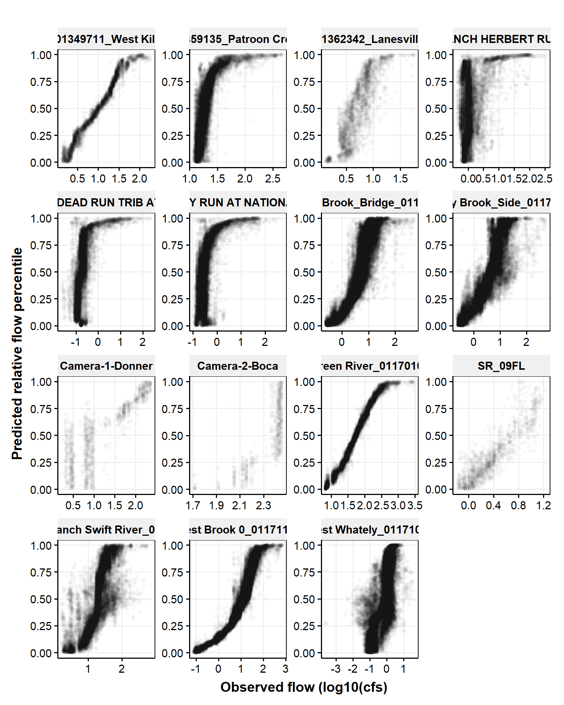

Code
library(FAdist)
library(getPrepareWBData)
library(ggpubr)
library(tidyverse)library(FAdist)
library(getPrepareWBData)
library(ggpubr)
library(tidyverse)d <- read.csv('./data/in/concatenated_predictions.csv') |>
mutate(flow_cfs_log10 = log10(flow_cfs))Logistic is blue line and gam is green line. Regressions are across data_group. Grouped by site.
ggplot(d |> filter(!is.na(flow_cfs_log10)), aes(flow_cfs_log10, rank_pred)) +
geom_point(aes(color = data_group), alpha = 0.025) +
guides(color = guide_legend(override.aes = list(alpha = 1))) +
geom_smooth(method = "glm", method.args= list(family="binomial"), se = FALSE) +
geom_smooth(color = "darkgreen", se = FALSE) +
labs(y = "Predicted percentile", x = "Observed flow (log10(cfs)") +
theme_publication() +
facet_wrap(~station_name, scales = "free")
Pick sites that seem to have enough data to get predictions
stationsToUse <- c(12, 29, 65, 80)
d2 <- d |>
filter(
!is.na(flow_cfs_log10),
station_id %in% stationsToUse
)
ggplot(d2, aes(flow_cfs_log10, rank_pred)) +
geom_point(aes(color = data_group), alpha = 0.1) +
guides(color = guide_legend(override.aes = list(alpha = 1))) +
geom_smooth(method = "glm", method.args= list(family="binomial"), se = FALSE) +
geom_smooth(color = "darkgreen", se = FALSE) +
labs(y = "Predicted percentile", x = "Observed flow (log10(cfs)") +
theme_publication() +
facet_wrap(~station_name, scales = "free")
ggplot(d2, aes(scale(flow_cfs_log10), scale(score))) +
geom_point(aes(color = data_group), alpha = 0.1) +
guides(color = guide_legend(override.aes = list(alpha = 1))) +
# geom_smooth(method = "glm", method.args= list(family="binomial"), se = FALSE) +
geom_smooth(color = "darkgreen", se = FALSE) +
labs(y = "Score, scaled", x = "Observed flow (log10(cfs), scaled") +
theme_publication() +
facet_wrap(~station_name, scales = "free")
Focus on West Brook 0
dWB0 <- d |>
filter(
!is.na(flow_cfs_log10),
station_name %in% "West Brook 0_01171100"
) |>
mutate(
flow_cfs_log10_scaled = scale(flow_cfs_log10),
score_scaled = scale(score)
)
#ojs_define(dWB0_OJS = transpose(dWB0))
ggplot(dWB0, aes(flow_cfs_log10_scaled, score_scaled)) +
geom_point(aes(color = data_group), alpha = 0.1) +
guides(color = guide_legend(override.aes = list(alpha = 1))) +
#geom_smooth(method = "glm", method.args= list(family="binomial"), se = FALSE) +
geom_smooth(color = "darkgreen", se = FALSE) +
labs(x = "Observed flow (log10(cfs)", y = "Score") +
theme_publication()
ggplot(dWB0, aes(flow_cfs_log10_scaled, score_scaled)) +
geom_point(aes(color = data_group), alpha = 0.1) +
guides(color = guide_legend(override.aes = list(alpha = 1))) +
# geom_smooth(method = "glm", method.args= list(family="binomial"), se = FALSE) +
geom_smooth(color = "darkgreen", se = FALSE) +
labs(x = "Observed flow (log10(cfs), scaled", y = "Score, scaled") +
theme_publication()
ggplot(dWB0, aes(rank_obs, rank_pred)) +
geom_point(aes(color = data_group), alpha = 0.1) +
guides(color = guide_legend(override.aes = list(alpha = 1))) +
# geom_smooth(method = "glm", method.args= list(family="binomial"), se = FALSE) +
geom_smooth(color = "darkgreen", se = FALSE) +
labs(x = "Ranked flow", y = "Ranked score") +
theme_publication()
ggplot(dWB0, aes(flow_cfs_log10, score)) +
geom_point(aes(color = data_group), alpha = 0.1) +
guides(color = guide_legend(override.aes = list(alpha = 1))) +
#geom_smooth(method = "glm", method.args= list(family="binomial"), se = FALSE) +
geom_smooth(color = "darkgreen", se = FALSE) +
labs(x = "Observed flow (log10(cfs)", y = "score") +
theme_publication() +
facet_wrap(~data_group)
ggplot(dWB0, aes(rank_pred, score)) +
geom_point(aes(color = data_group), alpha = 0.1) +
# geom_point(aes(rank_obs,flow_cfs,color = data_group), alpha = 0.1) +
guides(color = guide_legend(override.aes = list(alpha = 1))) +
# geom_smooth(method = "glm", method.args= list(family="binomial"), se = FALSE) +
geom_smooth(color = "darkgreen", se = FALSE) +
labs(x = "Ranked score", y = "Score") +
theme_publication() # facet_wrap(~data_group)fn_ecdf_WB0 <- ecdf(dWB0$score)
plot(fn_ecdf_WB0)
ggplot(dWB0, aes(score)) +
stat_ecdf(geom = "step") +
theme_publication()
#stat_ecdf(aes(flow_cfs), color = "blue")
ggplot(dWB0, aes(score_scaled)) +
stat_ecdf(geom = "step") +
stat_ecdf(aes(flow_cfs_log10_scaled), color = "blue") +
theme_publication() 
fn_ecdf_flow <- ecdf(dWB0$flow_cfs_log10_scaled)
dWB0$flow_cfs_log10_scaled_ecdf = fn_ecdf_flow(dWB0$flow_cfs_log10_scaled)
plotSubSample <- function(dIn, numSample){
#numSample <- 10
dInSample <- sample_n(dIn, numSample)
ggplot(dIn, aes(score_scaled)) +
stat_ecdf(geom = "step") +
stat_ecdf(aes(flow_cfs_log10_scaled), color = "blue") +
geom_point(aes(flow_cfs_log10_scaled, flow_cfs_log10_scaled_ecdf), color = "orange", size = 4, data = dInSample) +
#stat_ecdf(aes(flowScaled), color = "orange", data = flowSample) +
#stat_ecdf(aes(flow_cfs_log10_scaled), color = "orange", geom = "point", size = 3, data = flowSample) +
#stat_ecdf(aes(flow_cfs_log10_scaled), color = "orange", geom = "smooth", data = flowSample) +
labs(x = "Scaled value, blue = flow, black = image score", y = "Empirical cumulative distribution") +
theme_publication()
}
plotSubSample(dWB0, 10)
plotSubSample(dWB0, 5)
plotSubSample(dWB0, 5)
relFlow_WB0 <- data.frame(
value = dWB0$rank_pred,
ecdf = fn_ecdf_WB0(dWB0$rank_pred)
) |>
mutate(
value0_100 = (value - min(value)) / (max(value) - min(value))
)
ggplot(relFlow_WB0, aes(value0_100, ecdf)) +
geom_point() +
labs(x = "Relative flow from FPE scores") +
theme_publication()